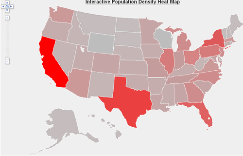

One mistake Cairo talks about is the inability of a map to accurately represent an area. The Earth is obviously not a flat surface like a map appears to be, a lot of data is lost in making it like this. Some of this data could be interpreted if the math was topgraphic.
Another mistake has to do with properly representing size. Cairo says that population's associated with circles on a map could not be accurate. Incorporating a heat map of population density could be a cool way of showing population accurately.
